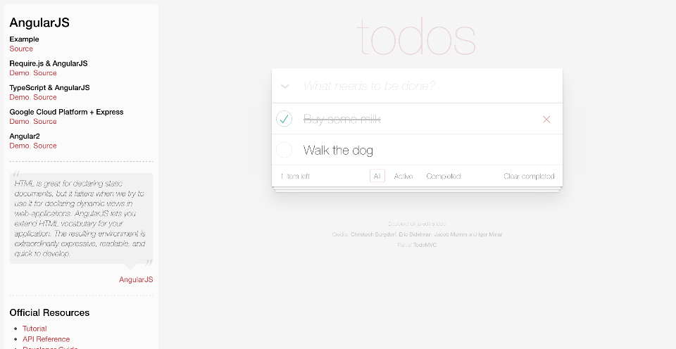
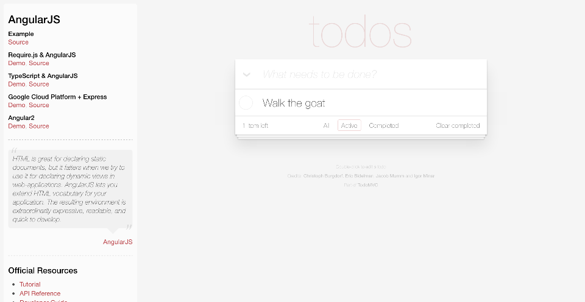
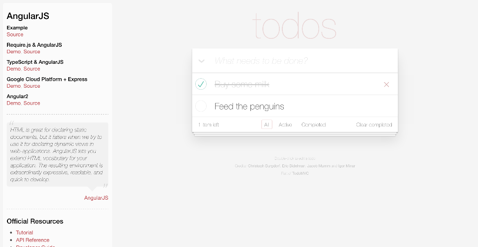
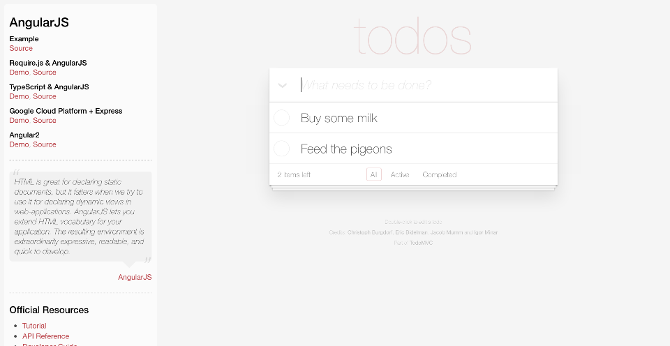
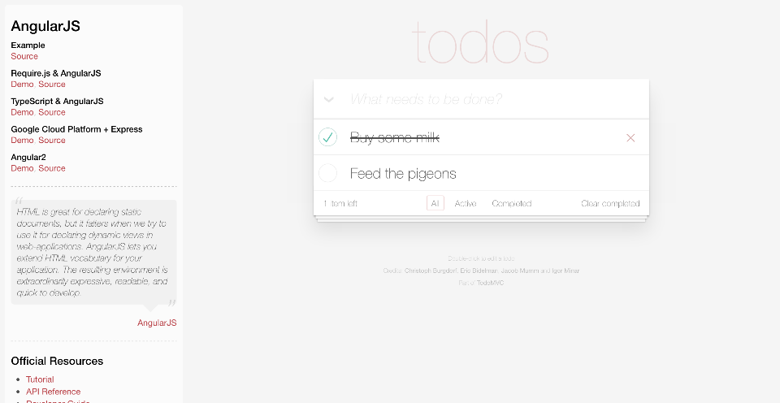

Demo Project using Serenity and Cucumber
Home
>
Filtering My Todo List
>
Viewing items by status
> Screenshots
Overall Test Results
Requirements
Capabilities
Features
Report generated 24-11-2016 12:43
Filtering My Todo List
Feature
In order to make me feel
a sense of accomplishment
As a forgetful person I want to be to view all of things I have completed
Cucumber (tag)
Staying Focused (capability)
Viewing Items By Status
Scenario:
Given that Jane has a todo list containing Buy some milk, Walk the dog
And she has completed the task called 'Buy some milk'
When she filters her list to show only Active tasks
Then her todo list should contain Walk the dog




